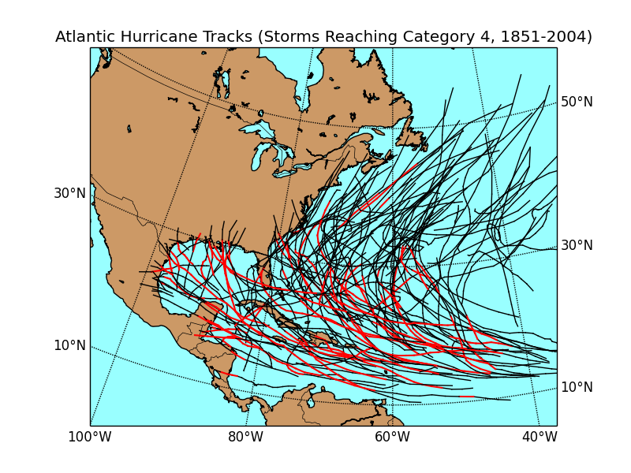
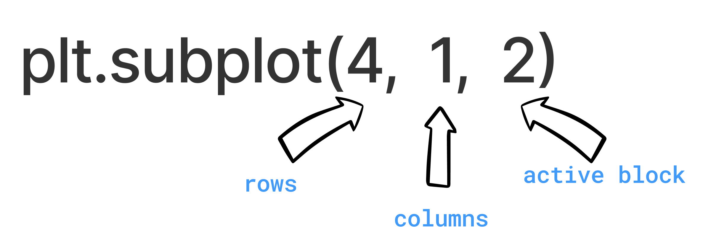
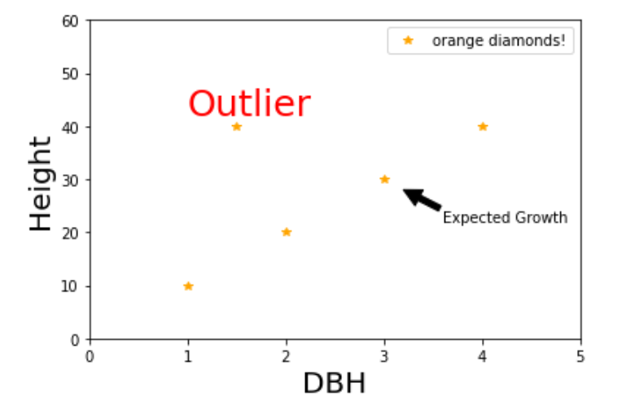

Chapter 5: Python Plotting using Matplotlib#
Author: Dr. Suborna Ahmed
Learning Objectives:#
Create a plot
Add data to a plot
Change colors and styles
Add text and annotations
Add Labels in the axis
Add limits of axis
Add titles, and sub titles
Create and place a legend
Multiple plots
1. What is Matplotlib?#
Matplotlib is a plotting library for Python with Matlab like syntax and interactivity. Matplotlib.pyplot is a collection of command style functions that make matplotlib work like MATLAB. Each pyplot function makes some change to a figure: e.g., creates a figure, creates a plotting area in a figure, plots some lines in a plotting area, decorates the plot with labels, etc.
The story started here: A fellow named John D Hunter really liked the plotting interface offered by Matlab, but also really liked Python. Specifically he wanted to visualize Electrocorticography (ECoG) data of epilepsy patients during post-doctoral research in Neurobiology.
Through continued development and commitment from multiple resources, we have Matplotlib in its current maturing state still under development. Many other packages build on it and distributed as a base package with many (but not all) Python IDEs.
Matplotlib website:Projects and examples of matplotlib
Matplotlib github page: further detail
2. What can we do with MatPlotlib?#
Matplotlib is a versatile plotting library for Python that allows you to generate a wide variety of static, animated, and interactive plots.
It can create various types of plots including:
Line Plots: to visualize the trend of data.
Scatter Plots: useful for displaying relationships between different variables.
Bar Plots: useful to compare quantities of different categories.
Histograms: useful for visualizing distributions of data.
Pie Charts: useful to represent data in proportions of a whole.
Box Plots: useful to visualize the statistical summary of data (min, Q1, median, Q3, max).
Heatmaps: useful to represent data in the form of color gradients.
3D Plots: useful to represent three-dimensional data.
Matplotlib Gallery: A lot of graphs and plots we can create using matplotlib
Also, the extention, Basemap, to Matplotlib that allows you to create static, animated, and interactive maps using Python.

Reference: https://matplotlib.org/basemap/users/examples.html
3. How do we plot?#
Importing
matplotlibmodule aspltUsing the
plt.plot()command
The following code shows a simple example:
We first import the matplotlib module and specify two lists, x and y, containing the x-coordinates and y-coordinates of the points to be plotted, then we call the plot command.
# import the moduel
import matplotlib.pyplot as plt
# create x and y
x = [4, 5, 8]
y = [8, 10, 20]
# plot x and y using default line style and color
plt.plot(x, y)
[<matplotlib.lines.Line2D at 0x7fb2a98081f0>]
For the following plot, we change the color and line style argument in plot function:
“b” represents the color blue.
“o” represents a circle marker, indicates that each point on the plot will be represented by a filled-in circle. The scatter plot will include three points at coordinates (4, 8), (5, 10), and (8, 20), respectively.
# plot x and y using blue circle markers
plt.plot(x, y, 'bo')
[<matplotlib.lines.Line2D at 0x7fb2a9941a00>]
There are other usually used format string characters which can change the color and marker style for plot.
other common color abbreviations include ‘r’ for red, ‘g’ for green, and ‘k’ for black,.
other common line style abbreviations include ‘-’ for solid line, ‘–’ for dashed line, and ‘s’ for square marker.
More line style and color argument representation can be found here.
For the following example, we use just use the “x” list to create the plot. Thus it creates a line plot where the x-axis is the index of each element of the x list (i.e., 0 to N-1, where N is the length of x), and the y-axis is the value of the corresponding element in x.
So, x = [4, 5, 8], and the points plotted would be (0,4), (1,5), (2,8). But withe the default setting for plt.plot() function, it plots a line and we cannot see each points.
# plot using x as index array 0..N-1
plt.plot(x)
[<matplotlib.lines.Line2D at 0x7fb2a9a662e0>]
Now we change the marker style to plus(+) markers to see each point (0,4), (1,5), and (2,8) more easily.
# ditto (the same), but with red plusses
plt.plot(x, 'r+')
[<matplotlib.lines.Line2D at 0x7fb2a9b7f040>]
4. Basic Structure#
The general structure of a plotting command is as follows:
plt.plot([x],[y], color=’X’, marker= ‘X’, linestyle=’X’, linewidth=X)
[x] and [y]are arrays or lists of numerical data representing the x and y coordinate values of the points to be plotted.colorspecifies the color of the line in the plot. You can use name like “blue”, “red”, or a short color code “b”, “r”.markerspecifies the style of the markers for each point. For example, you can use “o” for circle markers, “+” for plus markers, “.” for point markers, and so on.linestylespecifies the style of the line that connects the points in the plot. For example, ‘-’ for solid lines, ‘–’ for dashed lines, ‘-.’ for dash-dot lines, and so on.linewidthspecifies the thickness of the line. You can use numerical value to adjust the line.
See this site for more details of these parameters.
4.1. Parameter: marker#
The marker parameter in matplotlib’s plot() function is used to emphasize each point with a specified marker.
There are many types of markers available in Matplotlib, you can find them from this reference:http://sparkandshine.net/en/draw-with-matplotlib-colors-markers-and-line-styles/
4.2. Change Marker#
Markers
These are the commonly used markers in Python:
character |
description |
|---|---|
‘.’ |
point marker |
‘,’ |
pixel marker |
‘o’ |
circle marker |
‘v’ |
triangle down marker |
‘^’ |
triangle up marker |
‘<’ |
triangle left marker |
‘>’ |
triangle right marker |
‘1’ |
tri_down marker |
‘2’ |
tri_up marker |
‘3’ |
tri_left marker |
‘4’ |
tri_right marker |
‘8’ |
octagon marker |
‘s’ |
square marker |
‘p’ |
pentagon marker |
‘P’ |
plus(filled) marker |
‘*’ |
star marker |
‘h’ |
hexagon1 marker |
‘H’ |
hexagon2 marker |
‘+’ |
plus marker |
‘x’ |
x marker |
‘D’ |
diamond marker |
‘d’ |
thin_diamond marker |
‘ \(\vert\) ‘ |
vline marker |
‘_’ |
hline marker |
The following code display what each marker looks like in Python.
# Define a list of markers
markers = ['o', 'v', '^', '<', '>', 's', 'p', '*', 'h', 'H', '+', 'x', 'D', 'd', '|', '_']
# Create a figure and a set of subplots
fig, ax = plt.subplots()
for i, marker in enumerate(markers):
ax.plot(i, i, marker, markersize=10, label="Marker '{}'".format(marker))
ax.legend(loc='center left', bbox_to_anchor=(1, 0.5))
ax.set_title("Markers", fontsize = 20)
plt.show()
Certainly, you can change the marker in a Matplotlib plot to any of the valid markers.
Let’s say you want to use a square marker. The code for a square marker is ‘s’, so you would write:
x = [1, 2, 3, 4, 5]
y = [2, 3, 5, 7, 11]
plt.plot(x, y, marker='s')
[<matplotlib.lines.Line2D at 0x7fb2a9e36ac0>]
You can change it to the star(*) marker.
plt.plot(x, y, marker='*')
[<matplotlib.lines.Line2D at 0x7fb2a9f540d0>]
Or the triangle marker facing down.
plt.plot(x, y, marker='v')
[<matplotlib.lines.Line2D at 0x7fb2aa0635b0>]
4.3. Linestyle#
The linestyle parameter in Matplotlib’s plot() function is used to specify the appearance of the line that’s being drawn.
Here are some common linestyle options:
character |
description |
|---|---|
‘-’ |
solid line style (default) |
‘–’ |
dashed line |
‘-.’ |
dash-dotted line |
‘:’ |
dotted line |
‘’ or ‘ ‘ or ‘None’ |
draw nothing, no line connecting the points |
# Define a list of markers
linestyle = ['-', '--', '-.', ':', '']
for i, style in enumerate(linestyle):
plt.axhline(y=i, color = "b", linestyle=style, label="LineStyle '{}'".format(style))
plt.legend(loc='center left', bbox_to_anchor=(1, 0.5), fontsize="20")
plt.title("Line Style", fontsize = 15)
plt.show()
The example below show the plot with dashed line.
plt.plot(x, y, linestyle='--')
[<matplotlib.lines.Line2D at 0x7fb2aa356790>]
The example below shows a plot with star markers on corresponding points and connected by the dotted line.
plt.plot(x, y, marker = "*", linestyle='dotted')
[<matplotlib.lines.Line2D at 0x7fb2aa3d2e50>]
4.4. Colors#
The color parameter in Matplotlib’s plot() function is used to specify the color of the lines and markers in your plot.
You can specify colors in a variety of ways:
Named colors: Matplotlib recognizes the names of many colors. For example, color=’red’, color=’blue’, color=’green’, color=’black’, etc.
character |
color |
|---|---|
‘b’ |
blue |
‘g’ |
green |
‘r’ |
red |
‘c’ |
cyan |
‘m’ |
magenta |
‘y’ |
yellow |
‘k’ |
black |
‘w’ |
white |
Hex color codes: These are 6-digit codes that represent colors, preceded by a #. For example, color=’#FF0000’ is equivalent to color=’red’.
RGB tuples: Colors can also be defined in the RGB color model as tuples of red, green, and blue intensities. For example, color=(1, 0, 0) is equivalent to color=’red’.
Here is the example to change the color to blue with color name.
plt.plot(x, y, "o", linestyle="-", color='b') # your can also type "blue"
[<matplotlib.lines.Line2D at 0x7fb2a9d27df0>]
Here is the example for useing hex color code for purple.
plt.plot(x, y, color="#9400d3")
[<matplotlib.lines.Line2D at 0x7fb2a9954b20>]
Here is the example for using RGB tuple for red.
plt.plot(x, y, linestyle=":", color=(1, 0, 0))
[<matplotlib.lines.Line2D at 0x7fb2aa5abbb0>]
cmap=‘jet’
Do not use it!
cmap stands for colormap and is used to map scalar data to colors. It’s often used in functions that create image, contour, or surface plots, rather than simple line plots.
The ‘jet’ colormap is a rainbow colormap, but it’s often discouraged for use.
import math
from matplotlib.patches import Rectangle
import matplotlib.pyplot as plt
import matplotlib.colors as mcolors
def plot_colortable(colors, *, ncols=4, sort_colors=True):
cell_width = 212
cell_height = 22
swatch_width = 48
margin = 12
# Sort colors by hue, saturation, value and name.
if sort_colors is True:
names = sorted(
colors, key=lambda c: tuple(mcolors.rgb_to_hsv(mcolors.to_rgb(c))))
else:
names = list(colors)
n = len(names)
nrows = math.ceil(n / ncols)
width = cell_width * 4 + 2 * margin
height = cell_height * nrows + 2 * margin
dpi = 72
fig, ax = plt.subplots(figsize=(width / dpi, height / dpi), dpi=dpi)
fig.subplots_adjust(margin/width, margin/height,
(width-margin)/width, (height-margin)/height)
ax.set_xlim(0, cell_width * 4)
ax.set_ylim(cell_height * (nrows-0.5), -cell_height/2.)
ax.yaxis.set_visible(False)
ax.xaxis.set_visible(False)
ax.set_axis_off()
for i, name in enumerate(names):
row = i % nrows
col = i // nrows
y = row * cell_height
swatch_start_x = cell_width * col
text_pos_x = cell_width * col + swatch_width + 7
ax.text(text_pos_x, y, name, fontsize=14,
horizontalalignment='left',
verticalalignment='center')
ax.add_patch(
Rectangle(xy=(swatch_start_x, y-9), width=swatch_width,
height=18, facecolor=colors[name], edgecolor='0.7')
)
return fig
Base colors:#
plot_colortable(mcolors.BASE_COLORS, ncols=3, sort_colors=False)
More colors:#
xkcd_fig = plot_colortable(mcolors.XKCD_COLORS)
xkcd_fig.savefig("XKCD_Colors.png")
Reference: https://matplotlib.org/stable/gallery/color/named_colors.html
Activity 1
Create a graph and add the following:
Add two lists and create a scatter plot.
In the graph add a symbol for points.
Join those points to show lines and line width should be 2
Add a colour
See solution for activity 1 at the end.
4.5. Axis Levels#
The ylabel() and xlabel() functions in Matplotlib are used to set the labels for the Y-axis and X-axis of the plot, respectively. They add a text label to the data axes to indicate what kind of data is shown along each axis.
ylabel( ): add y axis label
plt.xlabel(‘The X-Axis is here!’)xlabel( ): add a x axis labe
plt.ylabel(‘The Y-Axis is here!’)
You can add whatever text you like for ylabel and xlabel, to make the plot more readable and clear to anyone viewing the plot.
Here’s an example of how you might use these functions:
x = [1, 2, 3, 4, 5]
y = [2, 3, 5, 7, 11]
plt.plot(x, y)
# Set the labels for the x and y axes
plt.xlabel('Time (s)')
plt.ylabel('Velocity (m/s)')
Text(0, 0.5, 'Velocity (m/s)')
4.6. Axis Limits#
The plt.axis() function in Matplotlib is used to set the limits of the axes or to return the current axes’ limits. It’s a useful function when you want to focus the plot on a specific range or to ensure that the axes are scaled proportionally.
You can provide a list or a tuple to the plt.axis() function to specify the limits of the X and Y axes in the form of:
plt.axis[x_min, x_max, y_min, y_max].
Here are examples to add limits for both x and y axes.
x = [4, 5, 8]
y = [8, 10, 20]
plt.plot(x, y, 'ro') # plot x and y using default line style and color
# Adding x-axis and y-axis levels
plt.ylabel('Numbers')
plt.xlabel('Series')
# x-axis limit 0 to 10 and y-axis limit 0 to 30
plt.axis([0, 10, 0, 30])
plt.show()
The limits setfor the x-axis (from 0 to 10) and the y-axis (from 0 to 5).
Since the data points ((4,8), (5,10), and (8,20)) are outside the boundary, they will not be shown in the plot due to these limits.
plt.ylabel('Numbers')
plt.xlabel('Series')
plt.axis([0, 10, 0, 5])
plt.plot(x,y, color='red', marker='X', linestyle='-', linewidth=2)
[<matplotlib.lines.Line2D at 0x7fb2ab7f3a30>]
Activity 2
In your previous graph in the activity 1 add the following:
Add axis labels for both x and y axis.
Add axis limits as well.
See solution for activity 2 at the end.
5. Plotting Multiple Lines in One Graph#
Matplotlib supports plotting multiple lines in a single graph. This can be extremely useful when you want to compare two or more different datasets.
Here is the example for plotting multiple lines in the same graph.
# Define data for two lines
x1 = [1, 2, 3, 4, 5]
y1 = [2, 3, 5, 7, 11]
x2 = [1, 2, 3, 4, 5]
y2 = [1, 4, 6, 8, 10]
# Plot first line
plt.plot(x1, y1)
# Plot second line
plt.plot(x2, y2)
plt.xlabel('X-axis Label')
plt.ylabel('Y-axis Label')
Text(0, 0.5, 'Y-axis Label')
Or, you can use a single .plot() command to put two lines together.
# create three evenly sampled values
t = range(1, 20, 2)
t1 = range(20, 40, 2)
t2 = range(30, 50, 2)
# create multiple lines in one graph
# red dashes and green .- line
plt.plot(t, t1, 'r--', t, t2, 'g.-')
# set the labels for the plot
plt.ylabel('Numbers')
plt.xlabel('Series')
Text(0.5, 0, 'Series')
6. Data and Plot Parameters Together#
When creating plots in Matplotlib, it’s common to specify both the data and the plot parameters together in the same function call. By doing this, you can define the visual aspects of the plot at the same time as the data being plotted.
A typical way of doing this would be in the plt.plot() function, where you can specify the x and y data, as well as parameters like color, linestyle, markers, and labels.
Here is an example:
plt.plot([1,2,3,4], [1,4,9,16], 'ro')
plt.axis([0, 6, 0, 20])
(0.0, 6.0, 0.0, 20.0)
6.1. Font size: Labels and Markers#
Matplotlib provides a variety of options for controlling the font size of labels and markers in your plots. You can set the font size of different elements like axis labels, labels, etc.
Following is an example of how to adjust font size for marker and the x and y labels of a plot:
y = [1, 2, 3, 4]
x = [5, 10, 15, 20]
plt.plot(x,y, color='red', marker='D', linewidth=2, markersize=12)
plt.ylabel('Numbers', fontsize=20)
plt.xlabel('Series', fontsize=20)
plt.axis([0,25,0,6])
(0.0, 25.0, 0.0, 6.0)
The size of markers in a plot can be controlled using the markersize or ms parameter in the plot() function
Here is an example:
y = [1, 2, 3, 4]
x = [5, 10, 15, 20]
plt.plot(x,y, color='red', marker='D', linewidth=2, markersize=7) # change the marker size
plt.ylabel('Numbers', fontsize=10)
plt.xlabel('Series', fontsize=10)
plt.axis([0,25,0,6])
(0.0, 25.0, 0.0, 6.0)
You can change the font size for labels with xlabel(), ylabel() functions.
They all accept a fontsize parameter, which controls the size of the text.
Here is an example:
y = [1, 2, 3, 4]
x = [5, 10, 15, 20]
plt.plot(x,y, color='red', marker='D', linewidth=2, markersize=12)
plt.ylabel('Numbers', fontsize=10) # change the xlabel size
plt.xlabel('Series', fontsize=10) # change the ylabel size
plt.axis([0,25,0,6])
(0.0, 25.0, 0.0, 6.0)
You can adjust the font size of the tick labels (the numbers along the axes) using the tick_params() function.
For example:
y = [1, 2, 3, 4]
x = [5, 10, 15, 20]
plt.plot(x,y, color='red', marker='D', linewidth=2, markersize=12)
plt.ylabel('Numbers', fontsize=10) # change the xlabel size
plt.xlabel('Series', fontsize=10) # change the ylabel size
plt.axis([0,25,0,6])
plt.tick_params(axis='x', labelsize=20) # change the size for tick labels on x-axis
6.2. Marker Colour and Define Parameters#
In Matplotlib, you can specify the color and other properties of markers in your plot. The plot() function accepts a variety of parameters to define the appearance of the markers.
Here are some parameters you might use when plotting with markers:
marker: This defines the style of the markers. There are many options like ‘o’ for circles, ‘s’ for squares, ‘+’ for plus signs, and more.markersize or ms: This defines the size of the markers. You can set it to any positive number.markerfacecolor or mfc: This defines the color of the inside of the markers. You can set it to any color name, or RGB tuple, or hex color code.markeredgecolor or mec: This defines the color of the edge of the markers. You can set it to any color name, or RGB tuple, or hex color code.markeredgewidth or mew: This defines the width of the edges of the markers. You can set it to any positive number.
The following example sets the marker shape to a diamond, the line style to a solid line, the marker size to 4, the line width to 2, and sets the color inside the marker to green.
a = range(1,100, 2)
b = range(40,90)
plt.plot(a, b, color='red', marker='D', linestyle='-', markersize=4, linewidth=2, markerfacecolor='green')
plt.ylabel('b', fontsize=20)
plt.xlabel('a', fontsize=20)
Text(0.5, 0, 'a')
7. Title and Subtitle#
Adding titles and subtitles to your plots in matplotlib can provide important information and context. Here’s a more detailed explanation:
More examples: https://matplotlib.org/3.1.0/api/_as_gen/matplotlib.figure.Figure.html#matplotlib.figure.Figure.suptitle
The title of a plot describes what the plot is about. You can set a title or subtitle for your plot in matplotlib using the title() and subtitle() function. Also, you can change the font size the title and subtitle in the similar way as we change the font size for lables.
Here’s an example:
plt.title('This is a title')
plt.subtitle('This is a subtitle')
For the example below, it has a “y” argument in both the title and subtitle function. Positions of the title and subtitle have been manually adjusted using the y argument in this case.
y=1.06 adjusts the position of the title.
(By default, the title is placed above the axes at y=1.0. Setting y=1.06 raises the title slightly above its default position.)
y=.93 lowers the subtitle slightly below the position of the main title.
# Title and SUnbible
a = range(1,100, 2)
b = range(40,90)
len(a), len(b)
plt.plot(a, b, color='red', marker='D', linestyle='-', markersize=4, linewidth=2, markerfacecolor='green')
plt.title("Add a Title Here", fontsize=16, y=1.06)
plt.suptitle("Subtitle: Here", fontsize=12, y=.93)
plt.ylabel('b', fontsize=20)
plt.xlabel('a', fontsize=20)
Text(0.5, 0, 'a')
7.1. Subplots#
Multiple plots:
The plt.subplot() function in Matplotlib is a way to arrange multiple plots in a grid structure within a single figure. The function takes three integer arguments—nrows, ncols, and index—which denote the number of rows, the number of columns, and the index of the current subplot, respectively.
plt.subplot(412) is shorthand for plt.subplot(4, 1, 2): creates a new plot, divides in four rows and one column, and makes the second plot active
If there is already a plot window open, this can subdivide your plot window and start adding to it!
If you do not have a window open, one will open for you with the right rows and columns
Rows/columns/active block can be changed anytime!

For the example below:
We first import the numpy module, which is used to generate sample data array for the plot, since matplotlib.pyplot module has been imported in previous chunk, we don’t need to import again here, but we need to import the numpy module here.
Next, we generate some sample data to plot:
x is a 1-D array of 100 evenly spaced numbers between 0 and \(2 \times \pi\).
y is a function of x, taking the sine of each x.
The plt.subplot() function is used to create subplots.
The arguments 411, 412, 413, and 414 mean that the figure is divided into a grid of 4 rows and 1 column, and each call to plt.subplot() is making a different subplot in this grid the current plot.
For each subplot:
A call to plt.plot(x, y**n) plots y raised to the power of n against x.
The plt.title() function is used to set a title for each subplot.
plt.tight_layout() is called to automatically adjust the subplot parameters to give specified padding. This function ensures that the subplots don’t overlap and that the labels and titles are clearly visible. (To undersand the use of plt.tight_layout() function, you can try to comment the last line of code and see what will happend to the plots.)
import numpy as np
# Some sample data
x = np.linspace(0, 2 * np.pi, 100)
y = np.sin(x)
plt.subplot(411) # The figure has 4 rows, 1 column, and this is the 1st subplot.
plt.plot(x, y)
plt.title('First plot')
plt.subplot(412) # The figure has 4 rows, 1 column, and this is the 2nd subplot.
plt.plot(x, y**2)
plt.title('Second plot')
plt.subplot(413) # The figure has 4 rows, 1 column, and this is the 3rd subplot.
plt.plot(x, y**3)
plt.title('Third plot')
plt.subplot(414) # The figure has 4 rows, 1 column, and this is the 4th subplot.
plt.plot(x, y**4)
plt.title('Fourth plot')
# Improve the spacing between subplots
plt.tight_layout()
7.2. Multiple Graphs and Save as a Permanant File#
The following codes show how to create an \(n \times n\) figure with multiple subplots.
The code starts by creating two ranges x and y that each go from 0 to 4.
Then uses plt.subplot() to divide the figure into a grid of subplots. The arguments to plt.subplot(2, 2, n) are specifying a grid of 2 rows and 2 columns, and the n is the index of the current plot, going from 1 to 4 (upper-left to lower-right).
In each subplot, the script plots y versus x using plt.plot(x, y). It assigns different colors to each subplot, cycling through red, yellow, blue, and green.
plt.tight_layout() is used to automatically adjust the subplot parameters so that the subplots fit nicely within the figure. plt.subplots_adjust(top=0.88) is used to adjust the top parameter of the subplots, which changes the spacing at the top of the subplots.
plt.suptitle(“Main Title”, fontsize=16) adds a main title to the entire figure (not individual subplots) with a font size of 16.
Finally, plt.savefig(‘Figure1.png’, dpi=300) is used to save the figure as a PNG image named Figure1.png with a resolution of 300 dots per inch (dpi). The figure will be saved in the same directory as your script.
So in summary, the following code creates a 2x2 grid of subplots, each plotting the same data but in a different color. It then adjusts the subplot layout, adds a main title to the figure, and saves the figure as a high-resolution PNG image.
x = range(5)
y = range(5)
# nrow=2, ncolumn=2
plt.subplot(2, 2, 1)
plt.plot(x, y, color='red')
plt.subplot(2, 2, 2)
plt.plot(x, y, color='yellow')
plt.subplot(2, 2, 3)
plt.plot(x, y, color='blue')
plt.subplot(2, 2, 4)
plt.plot(x, y, color='green')
plt.tight_layout()# adjusting parameters to fit subplots nicely
plt.subplots_adjust(top=0.88)
plt.suptitle("Main Title", fontsize=16)
plt.savefig('Figure1.png', dpi=300)
Activity 3
In the above graph (section 7.2) add the following:
Increase the x-axis limit to 6
Increase the y-axis limit to 10
Save the graph as “Activity3.png”
See solution for activity 3 at the end.
More examples:
Example for complex graph: 2 rows, 1 column
Data Generation:
p is a range of even numbers from 0 to 18.
q is a range of numbers from 0 to 9.First Subplot (Top):
The commandplt.subplot(211)sets up a grid of 2 rows and 1 column and selects the first subplot for plotting.
Theplt.plot(p, q, 'bo', [x*2 for x in p],[x/2 for x in q], 'k')line is plotting two series on the same subplot:The first series plots q against p with blue circle markers (‘bo’).
The second series plots each element of q divided by 2 against each element of p multiplied by 2) with black solid line (‘k’).
plt.axis([0, 40, 0, 12])sets the limits for the x-axis (0 to 40) and y-axis (0 to 12) for the first subplot.
Second Subplot (Bottom):
The commandplt.subplot(212)selects the second subplot for plotting.
plt.plot(p, [x**2 for x in q], 'r--')plots the square of each element in q against p with a red dashed line (‘r–‘).
plt.axis([0, 20, 0, 100])sets the limits for the x-axis (0 to 20) and y-axis (0 to 100) for the second subplot.
# data generation
p = range(0, 20, 2)
q = range(10)
# first subplot
plt.subplot(211)
plt.plot(p, q, 'bo', [x*2 for x in p],[x/2 for x in q], 'k')
plt.axis([0, 40, 0, 12])
# second subplot
plt.subplot(212)
plt.plot(p, [x**2 for x in q], 'r--')
plt.axis([0, 20, 0, 100])
(0.0, 20.0, 0.0, 100.0)
Example for complex graph: 2 rows, 2 column
First Subplot (Top-Left):
plt.subplot(221)prepares the grid with 2 rows and 2 columns and selects the first subplot for plotting.
plt.plot(p, q, 'bo', [x*2 for x in p],[x/2 for x in q], 'k')plots two series in the first subplot:The first series plots q against p with blue circle markers (‘bo’).
The second series plots [x/2 for x in q] against [x*2 for x in p] with a black solid line (‘k’).
plt.axis([0, 40, 0, 12])sets the limits for the x-axis (0 to 40) and y-axis (0 to 12) for the first subplot.Second Subplot (Top-Right):
plt.subplot(222)selects the second subplot for plotting.
plt.plot(p, [x**2 for x in q], 'r--')plots the square of each element in q against p with a red dashed line (‘r–‘).
plt.axis([0, 20, 0, 100])sets the limits for the x-axis (0 to 20) and y-axis (0 to 100) for the second subplot.Third Subplot (Bottom-Left):
plt.subplot(223) selects the third subplot for plotting.
The plotting and axis setting commands are the same as in the first subplot.Fourth Subplot (Bottom-Right):
plt.subplot(224)selects the fourth subplot for plotting.
Again, the plotting and axis setting commands are the same as in the first subplot.
# Four figures: 2 by 2
plt.subplot(221)
plt.plot(p, q, 'bo', [x*2 for x in p],[x/2 for x in q], 'k')
plt.axis([0, 40, 0, 12])
plt.subplot(222)
plt.plot(p, [x**2 for x in q], 'r--')
plt.axis([0, 20, 0, 100])
plt.subplot(223)
plt.plot(p, q, 'bo', [x*2 for x in p],[x/2 for x in q], 'k')
plt.axis([0, 40, 0, 12])
plt.subplot(224)
plt.plot(p, q, 'bo', [x*2 for x in p],[x/2 for x in q], 'k')
plt.axis([0, 40, 0, 12])
(0.0, 40.0, 0.0, 12.0)
8. Set Axis Limits#
The ylim() and xlim() functions in Matplotlib allow you to set the limits of the axes for your plot. This can be useful if you want to zoom into a specific portion of your data or if you want to standardize the axes across multiple subplots for easier comparison.
ylim(min=,max=): redefine y axis limits
xlim(min=, max=): redefine x axis limits
Note
The plt.plot([x_min,x_max, y_min,y_max]) function and plt.xlim(x_min, x_max) with plt.ylim(y_min, y_max) functions are not equivalent and are used for different purposes.
plt.plot([x_min,x_max, y_min,y_max]):
This function will attempt to plot four points on a graph and connect them with a line. However, this command would result in an error unless you pair each x-value with a corresponding y-value. Normally, plot() takes two equal-length arrays (or lists), the first for x-values and the second for y-values, to create a 2D line plot.
plt.xlim(x_min, x_max) and plt.ylim(y_min, y_max):
These functions are used to set the viewing limits of your plot along the x and y axis, respectively. They do not plot any data; instead, they control how much of the x and y axis are displayed on your plot. For instance, if you have data ranging from -10 to 10 but you only want to show from 0 to 10, you would use plt.xlim(0, 10).
In conclusion, the two are not the same and perform different tasks. plot() is used for plotting data on the graph while xlim() and ylim() are used for setting the viewing limits of the graph.
The following examples show the difference between the two functions.
First, we create x and y arrarys to plot a simple plot.
x = np.linspace(-10, 10, 100) # 100 evenly spaced points between -10 and 10
y = np.sin(x)
plt.plot(x, y)
[<matplotlib.lines.Line2D at 0x7fb2b0b02df0>]
Now, use xlim() and ylim() to change the range of x and y values displayed on the plot:
plt.plot(x, y)
plt.xlim(0, 5) # only show x values between 0 and 5
plt.ylim(0, 0.5) # only show y values between 0 and 0.5
(0.0, 0.5)
Now, let’s try to use plt.plot([-5, 5, -0.5, 0.5]) and see what happens:
plt.plot(x, y, "blue")
plt.plot([0, 5, 0, 0.5], "red")
[<matplotlib.lines.Line2D at 0x7fb2af6dcf10>]
8.1. Add a Legend#
In Matplotlib, a legend is an area describing the elements of the graph. In the legend() function, the loc parameter specifies the location of the legend.
The string ‘best’ places the legend at the location, among nine locations options, where the legend will cover the least amount of data (default value is ‘best’). Other possible options are: ‘upper left’, ‘upper right’, ‘lower left’, ‘lower right’, ‘right’, ‘center left’, ‘center right’, ‘lower center’, ‘upper center’, ‘center’.
Each line on the graph is labeled in the legend. You can define the labels while plotting by passing the label parameter in the plot() function and then call the legend() function to display the legend.
legend(): create an auto legend, if labels were defined in plot() command
Legend Location:
Location String |
Location Code |
|---|---|
‘best’ |
0 |
‘upper right’ |
1 |
‘upper left’ |
2 |
‘lower left’ |
3 |
‘lower right’ |
4 |
‘right’ |
5 |
‘center left’ |
6 |
‘center right’ |
7 |
‘lower center’ |
8 |
‘upper center’ |
9 |
‘center’ |
10 |
The plots below show different locations for legends.
# create x and y arrays
plt.figure(figsize=(10, 20)) # Width=10in, Height=20in
for i in range(1, 11):
plt.subplot(5, 2, i) # 2 rows, 5 columns, i-th subplot
plt.plot([1,2,3,4],[10,20,30,40], marker='*', color='black', label='black stars!', linestyle='')
plt.plot([2,4,6,8],[15,25,35,45], marker='', color='purple', label='purple line', linestyle='--')
plt.legend(loc=i-1)
plt.title("plt.legend(loc='{}')".format(i), fontsize=20)
plt.tight_layout()
The following example creates a figure with four subplots, each with different types of lines, colors, and legends.
# Subplot and Legend
xs = range(0, 20, 2)
ys = range(10)
plt.subplot(411)
plt.plot([x*2 for x in xs], [y*2 for y in ys], 'r--', label='red dashes')
plt.ylim(0, 100)
plt.xlim(0, 60)
plt.legend()
plt.subplot(412)
plt.plot([x*3 for x in xs], [y+2 for y in ys], color='g', linestyle='-', label='green solid')
plt.ylim(0, 100)
plt.xlim(0, 60)
plt.legend()
plt.subplot(413)
plt.plot([x/2 for x in xs], [y+5 for y in ys], linestyle='', marker='d', color='black', label='black diamonds')
plt.ylim(0, 100)
plt.xlim(0, 60)
plt.legend()
plt.subplot(414)
plt.plot([x*2 for x in xs], [y**2 for y in ys], color='blue', linestyle=':', label='blue dots')
plt.legend()
plt.ylim(0, 100)
plt.xlim(0, 60)
(0.0, 60.0)
More than two labels in examples below:
# Multiple Point Graphs with Legend
plt.plot([1,2,3,4],[10,20,30,40], marker='*', color='black', label='black stars!', linestyle='')
plt.plot([0.5,1.5,2.5,3.5],[5,10,15,20], marker='o', color='orange', label='orange circles!', linestyle='')
plt.plot([2,4,6,8],[15,25,35,45], marker='^', color='purple', label='purple triangles!', linestyle='')
plt.ylim(0, 50)
plt.xlim(0, 10)
plt.legend()
# This will create a plot with 3 sets of different colored and styled dots and no lines, and create a legend!
<matplotlib.legend.Legend at 0x7fb2ac4ef850>
# Location of Legend
plt.plot([1,2,3,4],[10,20,30,40], marker='*', color='black', label='black stars!', linestyle='')
plt.plot([0.5,1.5,2.5,3.5],[5,10,15,20], marker='o', color='orange', label='orange circles!', linestyle='')
plt.plot([2,4,6,8],[15,25,35,45], marker='^', color='purple', label='purple triangles!', linestyle='')
plt.ylim(0, 50)
plt.xlim(0, 10)
plt.legend(loc=4)
<matplotlib.legend.Legend at 0x7fb2ac5ec0d0>
9. Saving a Figure as a PDF File#
Using the plt.savefig() function.
The code below is used to create a plot using matplotlib and save it as a .pdf file.
# create a plot with each point each data point represented by an upward-pointing, purple triangle
plt.plot([2,4,6,8],[15,25,35,45], marker='^', color='purple', label='purple triangles!', linestyle='')
plt.ylim(0, 50) # sets the limits of the y-axis to be between 0 and 50.
plt.xlim(0, 10) # sets the limits of the x-axis to be between 0 and 10.
# sets the label for the x and y axies
plt.ylabel('b', fontsize=20)
plt.xlabel('a', fontsize=20)
# creates a legend for the plot in location 4 (the lower-right corner).
plt.legend(loc=4)
plt.savefig('Figure2.pdf', dpi=300)
10. Extra Text and Arrow#
The plt.text() and plt.annotate() functions in Matplotlib are used to add text to a plot.
plt.text(x, y, 'text'): adds a text in the plot.The ‘text’ at the location specified by x and y.
The x and y values are the coordinates where the lower left corner of the text box will be placed.
plt.annotate(text, xy, xytext, arrowprops): used to annotate the point xy with text.xy is the point (x, y) to annotate.
xytext is the position (x, y) to place the text at. If xytext is None, default to xy. arrowprops is optional and used to draw an arrow from the text to the annotated point.
For example:
plt.text(x,y, 'here'): add a text
plt.annotate('better text', [3.0,8], xytext=[3.5,6], arrowprops=dict())
‘better text’= what you want to write
[3.0,8] = coordinates for arrow
xytext= coordinates for text to place, and arrow to point
arrowprops=dict() = adding an arrow
In the following example:
plt.text(1, 42, ‘Outlier’, fontsize=25, color=’red’): places a text annotation at the point (1, 42) on the plot. The text reads ‘Outlier’, has a font size of 25, and is colored red.
plt.annotate(‘Expected Growth’, [2.15, 20], xytext=[2.6, 15], arrowprops=dict(facecolor=’black’)): adds an arrow annotation to the plot. The arrow points to the coordinates (2.15, 20), the text ‘Expected Growth’ is placed at the coordinates (2.6, 15), and the arrow is colored black.
plt.plot([1, 2, 3, 4, 1.5], [10, 20, 30, 40, 40], marker='*', linestyle='', color='orange', label='orange diamonds!')
plt.ylim(0, 60)
plt.xlim(0, 5)
plt.ylabel('Height', fontsize=20)
plt.xlabel('DBH', fontsize=20)
# Adding text and arrow
plt.text(1, 42, 'Outlier', fontsize=25, color='red')
plt.annotate('Expected Growth', [2.15, 20], xytext=[2.6, 15], arrowprops=dict(facecolor='black'))
plt.legend()
<matplotlib.legend.Legend at 0x7fb2b0743460>
Closing a Plot:
plt.close(): close all figure windows
The example below calls closes the figure window. This is typically used for preventing the plot from being displayed.
If you want to display the plot, you should replace plt.close() with plt.show().
plt.plot([1, 2, 3, 4, 1.5], [10, 20, 30, 40, 40], marker='*', linestyle='', color='orange', label='orange diamonds!')
plt.ylim(0, 60)
plt.xlim(0, 5)
plt.ylabel('Height', fontsize=20)
plt.xlabel('DBH', fontsize=20)
# Adding text and arrow
plt.text(1, 42, 'Outlier', fontsize=25, color='red')
plt.annotate('Expected Growth', [2.15, 20], xytext=[2.6, 15], arrowprops=dict(facecolor='black'))
plt.legend()
plt.close()
Activity 4
In the above graph move the arrow to point to the next value as shown in the following picture:

See solution for activity 4 at the end.
Customizing Graphs#
Examples of publication quality graphs using MatPlotLib:
Solutions#
Activity 1#
# create two lists: list x and list y
x = [4, 5, 8]
y = [8, 10, 20]
# create a scatter plot and add the "+" symbol with black color
# join the points to show a line with linewidth = 2
plt.plot(x,y, color='black', marker='+', linestyle=':', linewidth=2)
[<matplotlib.lines.Line2D at 0x7fb2aca08cd0>]
Activity 2#
x = [4, 5, 8]
y = [8, 10, 20]
plt.plot(x,y, color='black', marker='+', linestyle=':', linewidth=2)
# Adding x-axis and y-axis labels
plt.ylabel('Numbers')
plt.xlabel('Series')
# Adding axis limits
plt.axis([0, 10, 0, 30])
plt.show()
Activity 3#
x = range(5)
y = range(5)
# nrow=2, ncolumn=2
# set axis limits for each subplot
plt.subplot(2, 2, 1)
plt.plot(x, y, color='red')
plt.axis([0, 6, 0, 10])
plt.subplot(2, 2, 2)
plt.plot(x, y, color='yellow')
plt.axis([0, 6, 0, 10])
plt.subplot(2, 2, 3)
plt.plot(x, y, color='blue')
plt.axis([0, 6, 0, 10])
plt.subplot(2, 2, 4)
plt.plot(x, y, color='green')
plt.axis([0, 6, 0, 10])
plt.tight_layout()# adjusting parameters to fit subplots nicely
plt.subplots_adjust(top=0.88)
plt.suptitle("Main Title", fontsize=16)
# save the graph as 'Activity 3.png'
plt.savefig('Activity 3.png', dpi=300)
Activity 4#
# Adding text and arrow
plt.plot([1, 2, 3, 4, 1.5], [10, 20, 30, 40, 40], marker='*', linestyle='', color='orange', label='orange diamonds!')
plt.ylim(0, 60)
plt.xlim(0, 5)
plt.ylabel('Height', fontsize=20)
plt.xlabel('DBH', fontsize=20)
plt.text(1, 42, 'Outlier', fontsize=25, color='red')
plt.annotate('Expected Growth', [3.2, 28], xytext=[3.6, 22], arrowprops=dict(facecolor='black'))
plt.legend()
<matplotlib.legend.Legend at 0x7fb2af966760>